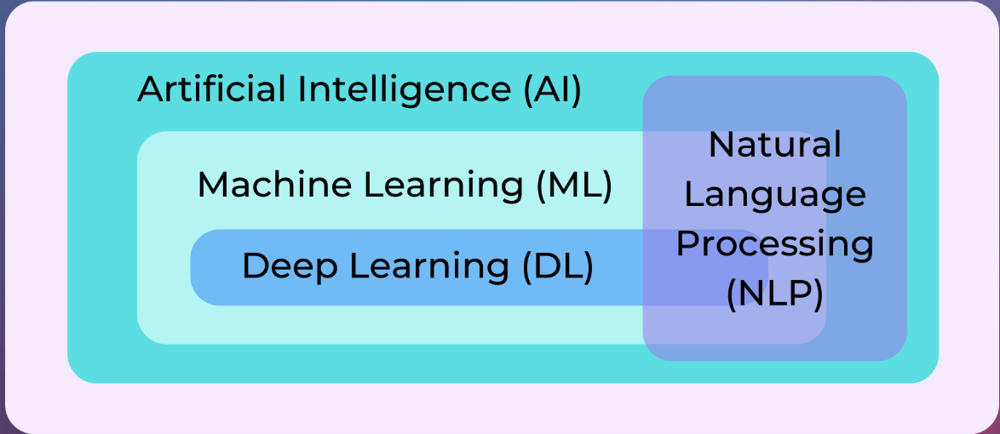
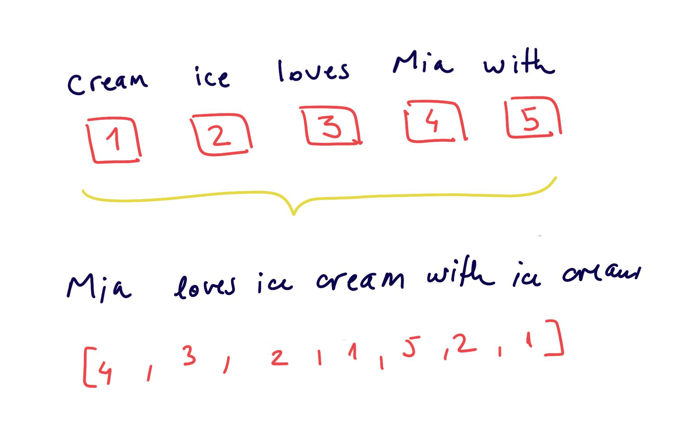
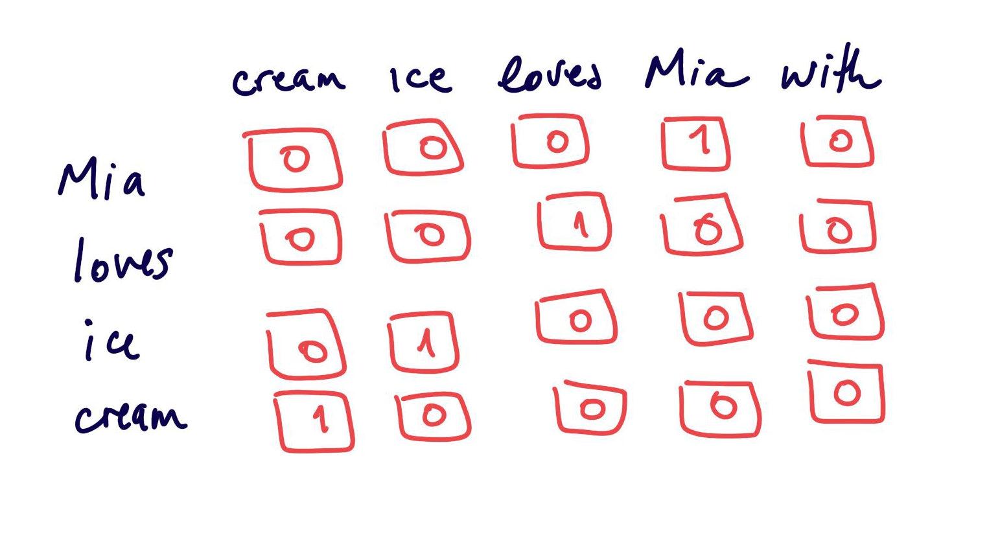
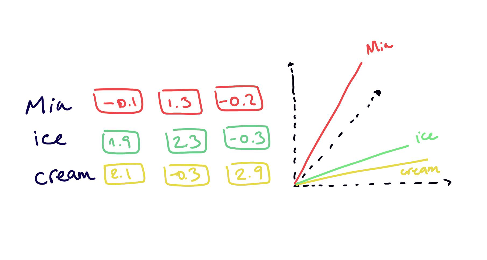
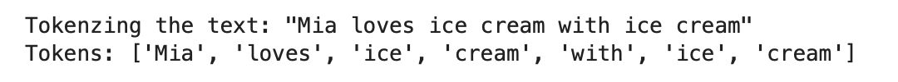
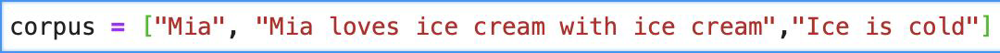
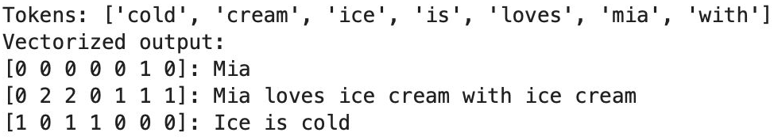
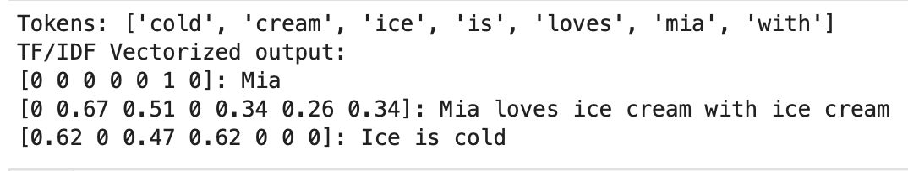
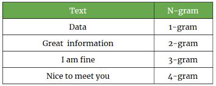

NLP#
Spell checking
Speech recognition
Translators
Analyse sentiment (positive/negative) of text
Extract topics from text (e.g. news articles)
Generate text (e.g. chatbots)
Search engines (e.g. Google)
…

Working with text data#
Algorithms work well with numbers
working with text = meaningfully transforming your data into numbers
meaningful = depends on your application
Converting text into numbers#
this is also called text preprocessing
Text processing → text to numbers#
Local representations
Encoding with a unique number
Statistical Encodings
Distributed Representations
Word Embeddings
Text processing → text to numbers#
Encoding with a unique number
Easy to create, but the numbers have no relational representation
the relationship between words is not captured
models cannot interpret well these representation

Text processing → text to numbers#
Statistical Encodings
Creating vectors of the size of the vocabulary
leads to large sparse features space
not very efficient

Text processing → text to numbers#
Word Embeddings
embedding = new latent space
properties and relationships between items are preserved
less number of dimensions
less sparseness

Statistical Encodings#
Text Preprocessing#
Tokenization
CountVectorizer
TF-IDF
N-grams
Normalization
Stemming
Lemmatization
Tokenization#

import nltk
nltk.download("punkt")
nltk.download("wordnet")
nltk.download("punkt_tab")
from nltk.tokenize import sent_tokenize, word_tokenize
from sklearn.feature_extraction.text import CountVectorizer, TfidfVectorizer
import pandas as pd
text = "Let us learn some NLP. NLP is amazing!"
word_tokenize(text)
['Let', 'us', 'learn', 'some', 'NLP', '.', 'NLP', 'is', 'amazing', '!']
sent_tokenize(text)
['Let us learn some NLP.', 'NLP is amazing!']
CountVectorizer#
Converting a collection of text documents to a matrix of token counts
CountVectorizer#


Gives a lot of weight to frequent (and maybe not so informative) words… → TF-IDF fixes this
corpus = [
'This is the first Document.',
'This document is the second document.',
'And this is the third one.',
'Is this the first document?'
]
cv = CountVectorizer()
X = cv.fit_transform(corpus)
features = cv.get_feature_names_out()
print(f"Features - {features}")
output = pd.DataFrame(X.toarray(), columns=cv.get_feature_names_out())
print("\n",output)
Features - ['and' 'document' 'first' 'is' 'one' 'second' 'the' 'third' 'this']
and document first is one second the third this
0 0 1 1 1 0 0 1 0 1
1 0 2 0 1 0 1 1 0 1
2 1 0 0 1 1 0 1 1 1
3 0 1 1 1 0 0 1 0 1
from sklearn.linear_model import LogisticRegression
y = ['document 1', 'document 2', 'document 3', 'document 4']
model = LogisticRegression().fit(X, y)
query = ['What is about second document?']
query_transformed = cv.transform(query)
print('prediction:',model.predict(query_transformed)[0])
print('probability:',model.predict_proba(query_transformed)[0])
prediction: document 2
probability: [0.2178996 0.39701782 0.16718298 0.2178996 ]
TF-IDF#
TF-IDF: Term Frequency * Inverse Document Frequency
→ measure how important a word is to a document in a corpus
A frequent word in a document that is also frequent in the corpus is less important to a document than a frequent word in a document that is not frequent in the corpus.
TF-IDF#
TF:
IDF:
TF-IDF:
TF-IDF#

In detail article how Tf-IDF works.
corpus = [
'This is the first Document.',
'This document is the second document.',
'And this is the third one.',
'Is this the first document?',
]
tfidf = TfidfVectorizer()
X = tfidf.fit_transform(corpus)
X.toarray()
array([[0. , 0.46979139, 0.58028582, 0.38408524, 0. ,
0. , 0.38408524, 0. , 0.38408524],
[0. , 0.6876236 , 0. , 0.28108867, 0. ,
0.53864762, 0.28108867, 0. , 0.28108867],
[0.51184851, 0. , 0. , 0.26710379, 0.51184851,
0. , 0.26710379, 0.51184851, 0.26710379],
[0. , 0.46979139, 0.58028582, 0.38408524, 0. ,
0. , 0.38408524, 0. , 0.38408524]])
df = pd.DataFrame((X.toarray().round(2)), columns=tfidf.get_feature_names_out())
df
| and | document | first | is | one | second | the | third | this | |
|---|---|---|---|---|---|---|---|---|---|
| 0 | 0.00 | 0.47 | 0.58 | 0.38 | 0.00 | 0.00 | 0.38 | 0.00 | 0.38 |
| 1 | 0.00 | 0.69 | 0.00 | 0.28 | 0.00 | 0.54 | 0.28 | 0.00 | 0.28 |
| 2 | 0.51 | 0.00 | 0.00 | 0.27 | 0.51 | 0.00 | 0.27 | 0.51 | 0.27 |
| 3 | 0.00 | 0.47 | 0.58 | 0.38 | 0.00 | 0.00 | 0.38 | 0.00 | 0.38 |
N-grams#
To model sequences of words… for example ice and cream make more sense as a 2-gram when they appear together
can be at word level or at character level

from nltk import ngrams
n = 4
for i in range(1, n):
print(f"{i} gram\n")
ngram = ngrams(text.split(), i)
for gram in ngram:
print(gram)
print("-"*10)
1 gram
('Let',)
('us',)
('learn',)
('some',)
('NLP.',)
('NLP',)
('is',)
('amazing!',)
----------
2 gram
('Let', 'us')
('us', 'learn')
('learn', 'some')
('some', 'NLP.')
('NLP.', 'NLP')
('NLP', 'is')
('is', 'amazing!')
----------
3 gram
('Let', 'us', 'learn')
('us', 'learn', 'some')
('learn', 'some', 'NLP.')
('some', 'NLP.', 'NLP')
('NLP.', 'NLP', 'is')
('NLP', 'is', 'amazing!')
----------